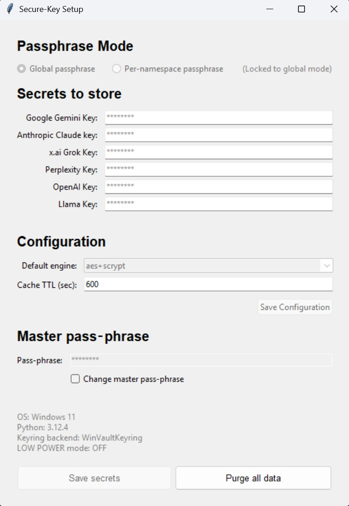

StructOut Secure Credentials Setup
This guide walks you through securely storing and retrieving API keys for OpenAI, Anthropic, xAI (Grok), Perplexity, Google Gemini, and Meta Llama.
StructOut's credential helper works identically on Windows, macOS, and Linux, offering both a GUI and a CLI.
⚠️ Use at Your Own Risk
All keys grant access to paid services. Monitor usage and set billing alerts for each provider.
1. Obtain Your API Keys
| Provider | Console URL |
|---|---|
| OpenAI | https://platform.openai.com/settings/organization/api-keys |
| Anthropic (Claude) | https://console.anthropic.com/settings/keys |
| xAI (Grok) | https://console.x.ai/team/ |
| Perplexity | https://www.perplexity.ai/account/api/keys |
| Google Gemini | Cloud Console → APIs & Services → Credentials |
| Meta Llama | https://llama.developer.meta.com/api-keys |
Copy each key and never commit it to version control.
2. How It Works — Security & Technology
| Layer | Details |
|---|---|
| Storage | Native OS keyring (Keychain, Credential Manager, Secret Service/KWallet) |
| Encryption engines | aes+scrypt (AES-256-GCM + scrypt) • chacha+argon2 (ChaCha20-Poly1305 + Argon2id) |
| KDF hardening | Salts + high work-factor; resists brute-force |
| Lock-out | 5 wrong attempts → 5-minute cooldown |
| Pass-phrase cache | Key cached (default 10 min) in keyring; optional Linux kernel keyring layer |
| Secure memory | Best-effort wiping of plaintext keys & pass-phrases |
3. Key Features
- Global vs Per-Namespace Pass-phrases
- Global (default) — one master pass-phrase unlocks everything.
- Per-namespace — each provider isolated with its own pass-phrase.
- Configuration Management — mode, cipher, and cache-TTL are stored securely and lock after first save.
- Cross-Platform — identical behaviour on Win/macOS/Linux.
- Dual Interface — GUI for ease, CLI for automation.
4. Quick Start
- Place
secure_key.py,secure_key_gui.py, and (optionally)constants.pyin one folder. - Install requirements:
pip install -r requirements.txt - Run the GUI:
python secure_key_gui.py - Paste your API keys into the fields shown (defaults to Global mode).
- Create a strong master pass-phrase (≥ 14 chars, mixed case, digits, symbols).
- Click Save secrets — your keys are encrypted and stored.
- Access a key in code:
from secure_key import get_api_key openai_key = get_api_key("OPENAI_API_KEY")
5. GUI Setup Walkthrough
Launch the GUI
python secure_key_gui.py
GUI Interface Overview

The GUI provides an intuitive interface with four main sections: - Passphrase Mode - Choose between global or per-namespace security - Secrets to store - Input fields for each API provider - Configuration - Encryption engine and cache settings - Master pass-phrase - Secure passphrase entry
5.1 Initial Setup
-
Choose Pass-phrase Mode - Global (default) – one master pass-phrase secures all providers. - Per-namespace – each provider gets its own pass-phrase. - ⚠️ Once you click Save, the mode is locked until you Purge All.
-
Enter Your Secrets - Paste each API key into its field – the text is masked as
********. -
Set Your Pass-phrase(s) - Global mode: enter a single strong pass-phrase (≥ 14 chars, upper/lower, digits, symbols). - Per-namespace mode: a pass-phrase box appears beside every key; fill each one.
-
Optional Options - Default engine: choose
aes+scrypt(default) orchacha+argon2. - Cache TTL (sec): how long the pass-phrase stays cached (default 600). -
Save - Click Save secrets – keys are encrypted in the OS keyring; mode & engine are frozen.
5.2 Updating and Rotating Keys
| Action | Steps |
|---|---|
| Add / replace a key | Paste new value → Save secrets → enter pass-phrase to confirm. |
| Change master pass-phrase (Global mode) |
Tick Change master pass-phrase → enter current + new pass-phrase → Save secrets (all keys re-encrypted). |
5.3 Purging Everything
- Click Purge all data.
- Confirm in the banner.
- The vault resets – you can choose a new mode next time.
6. CLI Option
If you prefer Command Line Interface instead of GUI to setup your API Keys, the following commands are handy
CLI gives all the same features available in the GUI Interface (matter of preference)
Get help
python secure_key.py --help
6.1 Initial Setup
python secure_key.py --init
- Mode →
globalorlocal(per-namespace). - Engine →
aes+scryptorchacha+argon2. - Cache TTL in seconds.
- Pass-phrase(s) → create & confirm.
- Paste each API key when prompted.
All settings and encrypted blobs are now stored in the keyring.
6.2 Common Commands
| Purpose | Command |
|---|---|
| List stored keys | python secure_key.py --list |
| Update a key | python secure_key.py --update OPENAI_API_KEY |
| Change master pass-phrase | python secure_key.py --change-passphrase "<current>" "<new>" |
| Diagnostics | python secure_key.py --status |
| Set cache TTL | python secure_key.py --set-ttl 1800 |
| Switch cipher | python secure_key.py --set-engine chacha+argon2 |
| Clear cached pass-phrases | python secure_key.py --clear-cache |
| Purge everything | python secure_key.py --purge-all |
7. Using Your Keys in Code
from secure_key import get_api_key
try:
openai_key = get_api_key("OPENAI_API_KEY") # prompts first time
anthropic_key = get_api_key("ANTHROPIC_API_KEY")
grok_key = get_api_key("GROK_API_KEY") # cached → no prompt
# …use the keys here…
except RuntimeError as err:
print(f"Credential error: {err}")
8. Troubleshooting
| Symptom | Solution |
|---|---|
| "Tk 8.6 required" | Install python-tk (brew, apt, or python.org installer). |
| Keyring backend errors | Ensure system keychain is unlocked / writable. |
| 5-minute lock-out | Wait or run --clear-cache. |
| Forgot pass-phrase | --purge-all (irreversible) then re-initialise. |
9. Advanced Environment Variables
| Variable | Purpose | Default |
|---|---|---|
SK_DEFAULT_TTL |
Cache lifetime (sec) | 600 |
SK_DEFAULT_ENGINE |
Pre-select cipher | aes+scrypt |
SK_LOW_POWER=1 |
Reduce KDF work-factor for slow CPUs | off |
SECURE_KEY_LOG=STDOUT |
Verbose debug logging | off |
10. Next Steps
- Fetch all six provider keys.
- Run the GUI or CLI quick-start.
- Call
get_api_key()wherever StructOut (or any Python project) needs credentials.
Your secrets are now encrypted, cached, and ready for production 🚀